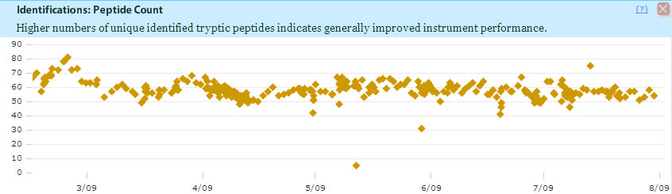
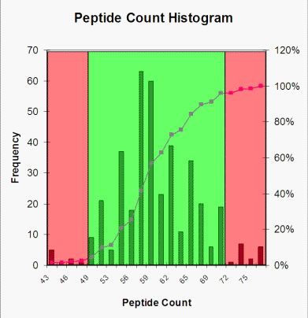

The acceptable range for each metric is derived from data showing how your LC-MS/MS has performed on standards runs in the past. Usually more historical data is better, because there is more information to which to compare. In addition, if the range gets too large, there may be outliers or fringe data that may be eliminated to get a tighter range.
Unfortunately there is no gold standard for what the control range for a metric should be. The range for the various metrics may depend upon the HPLC system , the column used, the buffers used, the MS/MS instrument and numerous other factors.
A reasonable control range can be derived from the historical data on a Control Chart . For example, the control chart below for the Peptide Count metric looks like it fluctuates around 60.

Another way of getting a sense of the random variation of a metric is to plot a histogram of its historical values. In the figure below you see that the peptide counts are indeed distributed more or less symmetrically around 59 or 60.
You can also see that the peptide counts in the area colored green in the graph are probably from measurements when the LC-MS/MS was working in its normal range. In Process control terminology, the instrument was “in control”. Likewise the relatively few peptide counts in the red areas of this histogram are “out of control”, that is, the LC-MS/MS was behaving oddly when these measurements were taken.

| < Previous |
If you have questions, comments and/or insights about MassQC , you can share them on the MassQC Users Forum .